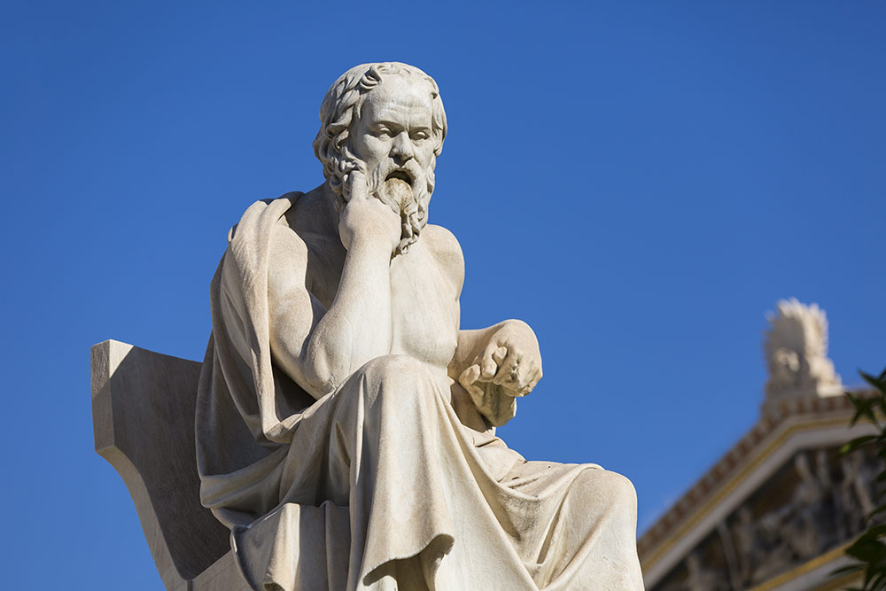

Philosophy is love of wisdom, in other words people seek to understand how to function and what they believe in and everyone is different there were many people in history that believed something and they were completely wrong and that is fine because with each step we are closer to the truth and it's interesting how different philosopher lived to different believes in the history of human kind
People that study philosophy often ask questions like:
- Does God exist?
- What makes people happy?
- Do humans have minds that are free or are we slaves to it?
- What is a person?
Greatest Greek Philosophers of all the time
Plato
Country: Greece
Time in history: 428-348 BC
Main ideas
- Think more
- Let your lover change you
- Decode the message of beauty
- Reform Society
One of the first Greek philosophers who's ideas today are more important than ever. He was a Socrates student but unlike him he wrote lots of books.
His main goal in life was to study what he calls EUDAIMONA which means what gives people fulfilment.
His greatest books are: The republic, The Symposium, The Law,The Meno and The Apology
First idea: Think More
The idea is to think more in terms of not following the popular opinions because you need to think for yourself do you really want that.
People often fall into that trap that we need to do something that most people find successful which is to have a lover, to have lots of money and to have luxury.
You have to think for yourself what you want and have a philosophy about that because maybe you just want a quiet life and live in a wooden cottage on a island with not a single soul on it, take the path less followed if you think that's right.
The second idea: Let your lover change you
This means that you shouldn't be satisfied with your partner and follow the the idea that you should keep your lover just the way there are
Lovers should learn from each other and take each others good qualities which gonna make them better version of themselves.
Be careful when picking a lover because it should be somebody that has good qualities and who can give you some values that you don't have.
Third idea: Decode the message of beauty
Ask yourself why do you say something is beautiful?
There is a beauty in everything and you should often see it and examine each object or thing and see for yourself if you find it beautiful or ugly
Sometimes the things that we find beautiful are the things that we are missing in our life: Gentleness, Harmony, Balance, Peace, Strength
Fourth idea: Reform Society
Sometimes we are not happy how are society is working and we should always aim to change that because we want to live somewhere where we get that fulfilment.
Plato argued that everyone should think rationally and therefore because philosopher before they could vote on their leaders.
He started a school to start the process The Academy and it lasted a few years.
Aristotle
Country: Macedonia
Time in history: 384-322 BC
Main ideas
- What makes people happy?
- What is art for?
- What are friends for?
- How can ideas cut through in a busy life?
Aristotle was Greek Philosopher who was also a scientist and he was one of the most influental human minds of western history.
He was born in Macedonia but after his father's death he migrated to Atheens where he joined Plato's school the Academy.
The remained there for 20 years being Plato's pupil and college.
First idea: What makes people happy?
Aristotle always observed what makes humans happy, he suggest that all successful people that have a good life have a certain virtues, and we should know what virtues are best for us and how to get better at them and cherish them in others.
There are 11 virtues: Courage, Temperance, Liberality, Magnificence, Magnanimity, Pride, Patience, Truthfulness, Witiness, Friendliness,Modesty.
All virtues are occupied with 3 different levels that go from low normal and high which is who you look in all of them where you should put yours, maybe sometimes it's best to put them right there in the middle.
Second idea: What is Art for?
Tragedy was popular at the time and it was always questioned why does some endings have shocking plot which should give the viewers effect of catharsis.
Viewers should feel pity for the characters that have been struck by tragedy and that is because the world is too cold hearted.
We don't look around ourself that normal people like us could get terrible futures if something terribly wrong happens in our life like a small mistake and art teaches us that.
Third idea: What are friends for?
There are 3 kind of friendships according to Aristotle which are:
- Friends that are seeking fun
- Strategic friendship so someone gets benefits from you and you get benefits from them
- True friend: Someone that is happy to see you and be around you and he is different than you but you love being around that person. You care about him like you care about yourself. you share virtues and you cancel each other defects.
Fourth idea: How can ideas get through in the busy world?
Strongest debate doesn't always Strongest debate doesn't always win the battle.
Aristotle had a theory which is called RHETORIC which is getting people to agree with you.
You have to acknowledge people fears and find the emotional side of the story, also make it funny because attention spans are short.
“We are what we repeatedly do. Excellence, then, is not an act, but a habit.”
— Aristotle
Socrates
Country: Greece
Time in history: 470-399 BC
Main ideas
- There shouldn't be Democracy
- What is the way we ought to live?
- What is nature of our true self?
- What is good and what is evil?
Socrates was the most influental and most discussed philosopher of all the time.
He was wildy know in Athens and he was sometimes mocked in plays that he played
He was hated by many people and he made people ignorant and foolish, he was sentenced to death because he rejected city gods and he criticized democracy.
First idea: There shouldn't be democracy
Socrates hated democracy because it's unfair system which gives all people opportunity to vote.
Most people are often stupid and the big decisions about the country should be made by highly educated people which have a lot of wisdom.
Democracy got him killed at the end because there was a trial where most of the people made him guilty
Second idea: What is the way we ought to live?
For this you have to have self-knowledge and unexamined life is not worth living.
You need to understand what makes you special and what is your passion and you need to follow it.
Find your reason why and life would be beautiful
Third idea: What is nature of one true self?
True self is your soul
Which means we all have different souls and we are unique in different ways
Fourth idea: What is good and what is evil?
It's basically what makes us happy if the thing makes us happy then that things is good if it makes us sad then that thing is evil.
The ultimate good is a virtue which makes people happy if they have good virtues
Always seek happiness because that is all that matters at the end of the day.
“The only true wisdom is in knowing you know nothing.”
— Socrates